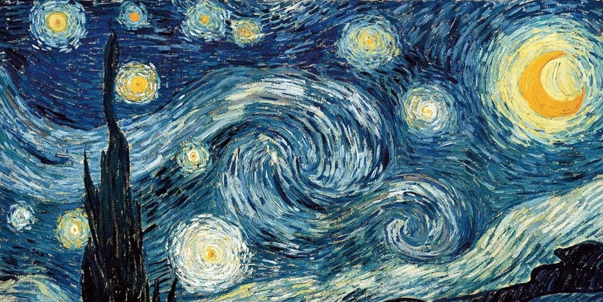
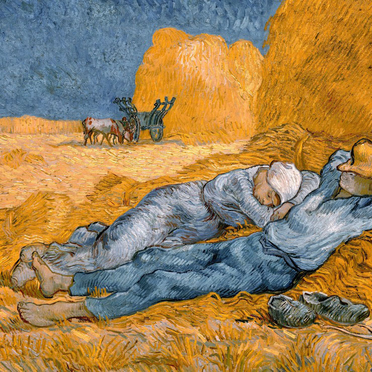

Vincent (Willem) Van Gogh est né le 30 mars 1853 à Groot-Zundert, un petit village de Hollande. Fils d'un pasteur protestant, il fut baigné dès son plus jeune âge dans la religion. Son tempérament agité lui pose quelques difficultés pour se faire des amis. En 1857 naît son frère Théodorus (dit Théo), qui deviendra son plus grand ami et confident. Ils auront une longue correspondance et Théo apportera à maintes reprises une aide financière à son frère. Après une scolarité mouvementée, il devint en 1869 commis dans la galerie d'art Goupil et Cie, galerie fondée par son oncle à La Haye. Il passera ensuite par la succursale londonienne puis celle de Paris. Vincent lit beaucoup, surtout la Bible. Il se désintéresse de son travail à la galerie et finit par démissionner en avril 1876.
Vincent Van Gogh décide alors de se tourner vers la vie religieuse. Il sera prédicateur dans un faubourg ouvrier de Londres avant d'entreprendre des études à la faculté de théologie d'Amsterdam. Il abandonne cet enseignement jugé trop difficile mais reste convaincu de sa vocation spirituelle. Il souhaite devenir prédicateur laïc. Il obtient en 1879 une mission d'évangélisation en Belgique. Il se rend auprès des mineurs du Borinage et partage leurs conditions de vie extrêmement dures. Il a traduit cette découverte de la misère humaine dans des tableaux sombres comme les Mangeurs de pommes de terre. Son implication auprès des plus modestes est cependant jugée excessive par ses supérieurs et son poste n'est pas renouvelé.
Hésitant un temps entre la vocation artistique et religieuse, il choisit de consacrer à la peinture. On peut dire aujourd'hui qu'il a eu raison. Son style très coloré a une vitalité et une tension particulière qui n'ont pas fini de marquer les esprits. En effet, après une phase de dépression, il retourne vers la vie d'artiste. En 1889, il rejoint son frère Théo à Paris. Il découvre les jeunes peintres parisiens, le Louvre et les estampes japonaises. Il rencontre entre autres Toulouse-Lautrec, Pissarro, Gauguin, et Bernard. A leur contact et sous leur influence, les tableaux de Van Gogh prennent un peu de couleurs. En février 1888, Van Gogh quitte Paris et s'installe à Arles. Sous le soleil de Provence, son style de peinture se modifie. Ses toiles sont plus colorées. Il peint par larges touches courbes et utilise abondamment les couleurs jaune, vert et bleu. Il crée un style inimitable qui atteint son apogée avec La Chambre à coucher et La Nuit étoilée.
Bien que Vincent ait été capable de réaliser plusieurs dizaines de tableaux à cette époque, son état mental était loin d'être stable. Effectivement, il est de plus en plus en proie à des crise de démence. Entre 1886 et 1888 par exemple, Vincent Van Gogh réalise de nombreux autoportraits, sous forme de tableaux ou de simples dessins. Dans toute sa carrière artistique, ces autoportraits représentent une quarantaine d'œuvres. Cependant, l'artiste peintre néerlandais n'en a réalisé aucun de son séjour à Auvers-sur-Oise dans un asile. Il n'a cependant pas hésité à se représenter avec un bandage entourant son oreille mutilée.
L'histoire de l'oreille coupée de Vincent Van Gogh commence en 1888. Rêvant de vivre en communauté d'artistes, il invite Gauguin à le rejoindre à Arles. Ils vivent et peignent ensemble mais, au bout de deux mois, leurs relations se détériorent. Le 23 décembre 1888, Vincent menace Gauguin avec un rasoir. Cette nuit-là, Vincent, probablement en proie à une crise de démence, se mutile l'oreille gauche. Il l'enveloppe pour aller l'offrir à sa maîtresse Rachel, une prostituée. Il est hospitalisé dès le lendemain. Après un bref retour chez lui dans la Maison jaune, Van Gogh entre de plein gré dans un asile près de Saint-Rémy-de-Provence en mai 1889. Il continue à peindre, fait quelques copies de tableaux de Millet et de Delacroix, mais aussi des œuvres qui lui sont propres comme les Blés jaunes.
Le peintre est victime de violentes crises qui fragilisent sa mémoire. Van Gogh décide de retourner en région parisienne, non loin de chez son frère, à Auvers-sur-Oise. Il est suivi par le docteur Gachet, un ami des impressionnistes. Ce dernier s'occupe de lui et apprécie son art. Van Gogh en fera d'ailleurs son portrait. Il créera plus de 80 peintures en deux mois ! Le 27 juillet 1890, le peintre tente de mette fin à ses jours. Il se tire une balle dans la poitrine et succombe deux jours plus tard, alors âgé de 37 ans. Il est enterré au cimetière d'Auvers en présence de son frère Théo, du docteur Gachet et du peintre Bernard. Malgré de graves troubles intérieures, Van Gogh ne s'est quasiment jamais arrêté de peindre. En huit ans, il a réalisé près de 900 tableaux et un millier de dessins. Son œuvre post-impressionniste> sera prise comme source d'inspiration par le fauvisme et l'expressionnisme.
Van Gogh passa les deux derniers mois de sa vie dans la bourgade d'Auvers-sur-Oise où il peignit plus de 70 toiles.
Pour plus d’information sur Vincent Van Gogh visiter ce site.